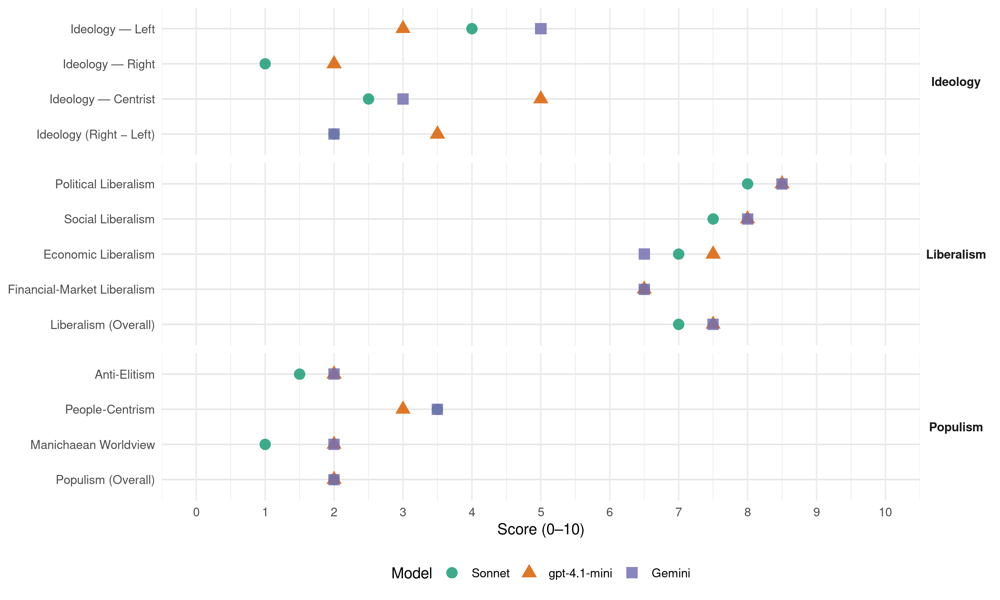

(Brazil, 2002)
manifesto_id 180310_200210
Get full text: This site shows derived annotations and short verbatim quotes only. The full manifesto text is © Manifesto Project / WZB — obtain it via manifesto-project.wzb.eu using the manifesto_id above.
Headline scores
| Dimension | Sonnet | gpt-4.1-mini | Gemini |
|---|---|---|---|
| Populism (Overall) | 2.0 | 2.0 | 2.0 |
| Anti-Elitism | 1.5 | 2.0 | 2.0 |
| People-Centrism | 3.5 | 3.0 | 3.5 |
| Manichaean Worldview | 1.0 | 2.0 | 2.0 |
| Ideology (Right − Left) | 2.0 | 3.5 | 2.0 |
| Liberalism (Overall) | 7.0 | 7.5 | 7.5 |
| Political Liberalism | 8.0 | 8.5 | 8.5 |
| Social Liberalism | 7.5 | 8.0 | 8.0 |
| Economic Liberalism | 7.0 | 7.5 | 6.5 |
| Financial-Market Liberalism | 6.5 | 6.5 | 6.5 |
Evidence per dimension
Economic Liberalism
Gemini · score 7.0 · verified · chunk 1
“reforma da estrutura tributária, a criação de”
Ao lado da redução do déficit externo, a reforma da estrutura tributária, a criação de mecanismos adequados
Gemini · score 6.0 · verified · chunk 2
“estimular a complementaridade entre os setores público e privado”
Estimular a complementaridade entre os setores público e privado, mantendo as universidades públicas como espinha dorsal
gpt-4.1-mini · score 8.0 · verified · chunk 1
“liberdade econômica, estabilização da economia, crescimento sustentado”
O segundo avanço, nos anos 90, foi o controle da inflação e a estabilização da economia. As maiores vítimas da disparada dos preços eram, como sempre, os trabalhadores.
gpt-4.1-mini · score 7.0 · verified · chunk 2
“crescimento econômico, expansão do PIB, aumento da arrecadação de impostos”
…Uma expansão do PIB de 4,5% ao ano proporcionará um aumento dos recursos destinados à educação de cerca de R$ 69 bilhões, em 2002, para R$ 93 bilhões, em 2006. Serão, portanto, mais R$ 24 bilhões anuais.
Sonnet · score 7.0 · verified · chunk 1
“reforma da estrutura tributária”
a reforma da estrutura tributária, a criação de mecanismos adequados de financiamento e a melhoria da infra-estrutura serão condições relevantes para retomar um crescimento mais rápido
Sonnet · score 7.0 · verified · chunk 2
“o livre comércio e o sistema multilateral”
tem interesse em fortalecer o livre comércio e o sistema multilateral, em torno da Organização Mundial do Comércio
Financial-Market Liberalism
Gemini · score 7.0 · verified · chunk 1
“estimulem o crédito e o mercado de capitais”
José Serra adotará medidas que estimulem o crédito e o mercado de capitais, visando suprir as necessidades
Gemini · score 6.0 · verified · chunk 2
“regulamentação do risco ambiental para efeitos de responsabilização por danos ambientais, no âmbito de bancos e seguradoras”
Promover a regulamentação do risco ambiental para efeitos de responsabilização por danos ambientais, no âmbito de bancos e seguradoras. Isso abrirá novos produtos para mercados financeiros
gpt-4.1-mini · score 7.0 · verified · chunk 1
“fortalecer os órgãos reguladores relevantes na matéria, em especial a Comissão de Valores Mobiliários”
Fortalecer os órgãos reguladores relevantes na matéria, em especial a Comissão de Valores Mobiliários – CVM, dotando-a de recursos humanos e materiais compatíveis com suas responsabilidades, e estreitando a coordenação entre essa instituição, a Secretaria de Previdência Complementar – SPC e a Superintendência de Seguros Privados – SUSEP.
gpt-4.1-mini · score 6.0 · verified · chunk 2
“pregão eletrônico Compras.Net, redução média de 25% nas compras realizadas”
…Ampliar o pregão eletrônico Compras.Net, até que inclua todas as compras de bens pelo governo federal e crescentemente serviços, de modo que, se for mantida a economia atual (redução média de 25% nas compras realizadas), tal modalidade poderá liberar mais de R$ 3 bilhões por ano para custear outros gastos federais.
Sonnet · score 7.0 · verified · chunk 1
“regime de livre flutuação cambial”
o Governo José Serra garantirá a manutenção do tripé: regime de livre flutuação cambial, regime monetário baseado em metas de inflação e, sobretudo, o novo regime fiscal
Sonnet · score 6.0 · verified · chunk 2
“novos produtos para mercados financeiros”
Isso abrirá novos produtos para mercados financeiros, tornando os bancos vigias do compromisso de seus clientes com o desenvolvimento sustentável.
Political Liberalism
Gemini · score 9.0 · verified · chunk 1
“restabelecimento da democracia. Unindo-se, o Brasil conquistou”
O primeiro grande avanço, nos anos 80, foi o restabelecimento da democracia. Unindo-se, o Brasil conquistou uma nova Constituição
Gemini · score 8.0 · verified · chunk 2
“democracia, tanto na política quanto no cotidiano”
O remédio para as deficiências da democracia brasileira é mais democracia, tanto na política quanto no cotidiano.
gpt-4.1-mini · score 9.0 · verified · chunk 1
“garantia dos direitos individuais, a ampliação da liberdade de expressão”
Unindo-se, o Brasil conquistou uma nova Constituição, a garantia dos direitos individuais, a ampliação da liberdade de expressão e de organização, a eleição direta de todos os governantes e parlamentares, o estímulo à participação política e ao controle social das instituições públicas.
gpt-4.1-mini · score 8.0 · verified · chunk 2
“democracia, partidos programáticos, eleições, parlamento”
…Reformar a política brasileira significa, portanto, basicamente, aperfeiçoar o sistema de nossas eleições para fortalecer nossa estrutura partidária. Um conjunto de projetos aprovados pelo Senado, em tramitação na Câmara dos Deputados, introduz aperfeiçoamentos importantes na legislação eleitoral e partidária.
Sonnet · score 8.0 · verified · chunk 1
“convicções democráticas e sociais”
A trajetória de José Serra demonstra que ele é capaz de representar bem o Brasil no exterior, tem convicções democráticas e sociais, sabe somar forças
Sonnet · score 8.0 · verified · chunk 2
“O remédio para as deficiências da democracia”
O remédio para as deficiências da democracia brasileira é mais democracia, tanto na política quanto no cotidiano.
Liberalism (Overall)
Gemini · score 8.0 · verified · chunk 1
“restabelecimento da democracia. Unindo-se, o Brasil conquistou”
O primeiro grande avanço, nos anos 80, foi o restabelecimento da democracia. Unindo-se, o Brasil conquistou uma nova Constituição
Gemini · score 7.0 · verified · chunk 2
“democracia, tanto na política quanto no cotidiano”
O remédio para as deficiências da democracia brasileira é mais democracia, tanto na política quanto no cotidiano.
gpt-4.1-mini · score 8.0 · verified · chunk 1
“garantia dos direitos individuais, a ampliação da liberdade de expressão”
Unindo-se, o Brasil conquistou uma nova Constituição, a garantia dos direitos individuais, a ampliação da liberdade de expressão e de organização, a eleição direta de todos os governantes e parlamentares, o estímulo à participação política e ao controle social das instituições públicas.
gpt-4.1-mini · score 7.0 · verified · chunk 2
“crescimento econômico, democracia, direitos da mulher, pregão eletrônico”
…Uma expansão do PIB de 4,5% ao ano proporcionará um aumento dos recursos destinados à educação… Reformar a política brasileira… Ampliar a oferta de atendimento físico e psicológico às vítimas de violência sexual… Ampliar o pregão eletrônico Compras.Net, até que inclua todas as compras de bens pelo governo federal.
Sonnet · score 7.0 · verified · chunk 1
“regime de livre flutuação cambial”
o Governo José Serra garantirá a manutenção do tripé: regime de livre flutuação cambial, regime monetário baseado em metas de inflação e, sobretudo, o novo regime fiscal
Sonnet · score 7.0 · verified · chunk 2
“O remédio para as deficiências da democracia”
O remédio para as deficiências da democracia brasileira é mais democracia, tanto na política quanto no cotidiano.
Anti-Elitism
Gemini · score 1.0 · verified · chunk 1
“sem os desvios do pistolão ou da perseguição política”
diretamente às famílias e comunidades carentes, sem os desvios do pistolão ou da perseguição política.
Gemini · score 3.0 · verified · chunk 2
“atrelada ao clientelismo, vulnerável à corrupção”
máquina administrativa continua presa a antigos vícios antidemocráticos, refratária aos princípios da legalidade e impessoalidade do serviço público, atrelada ao clientelismo, vulnerável à corrupção e alheia às necessidades do cidadão comum.
gpt-4.1-mini · score 2.0 · verified · chunk 1
“combate ao autoritarismo, ao atraso e às injustiças sociais”
ele esteve sempre do mesmo lado: no combate ao autoritarismo, ao atraso e às injustiças sociais; na linha de frente dos esforços para fazer o Brasil avançar no rumo da democracia, da justiça social e do desenvolvimento.
gpt-4.1-mini · score 2.0 · verified · chunk 2
“patrimonialismo, o populismo e o corporativismo”
…superação de alguns dos vícios mais salientes da vida pública no Brasil: o patrimonialismo, o populismo e o corporativismo. O noticiário dos meios de comunicação, excluídos os exageros e as inverdades, evidencia a persistência do patrimonialismo, ou seja, da utilização da administração pública para fins privados como uma das práticas mais nocivas e resistentes de nossa vida política.
Sonnet · score 1.0 · verified · chunk 1
“combate ao autoritarismo, ao atraso e às injustiças sociais”
ele esteve sempre do mesmo lado: no combate ao autoritarismo, ao atraso e às injustiças sociais; na linha de frente dos esforços
Sonnet · score 2.0 · verified · chunk 2
“o populismo e o corporativismo”
Não criou, assim, as condições institucionais para a superação de alguns dos vícios mais salientes da vida pública no Brasil: o patrimonialismo, o populismo e o corporativismo.
Ideology — Centrist
Gemini · score 2.0 · verified · chunk 1
“nosso Plano Social vai fazer pelas pessoas”
O que o Plano Real fez pela economia, nosso Plano Social vai fazer pelas pessoas
Gemini · score 4.0 · verified · chunk 2
“governo ao lado dos cidadãos”
7. O GOVERNO AO LADO DOS CIDADÃOS A democratização deu ao Brasil uma Carta de direitos avançada
gpt-4.1-mini · score 6.0 · verified · chunk 1
“sem aventuras e sem messianismos, num clima de democracia e estabilidade”
tenha pulso firme para fazer as mudanças de que o Brasil precisa aqui dentro, sem aventuras e sem messianismos, num clima de democracia e estabilidade.
gpt-4.1-mini · score 4.0 · verified · chunk 2
“somar forças. Aliás, devo dizer modestamente que essa é minha característica”
…referindo-se a sua atuação à frente do Ministério da Saúde, José Serra destacou: “Tratamos de somar forças. Aliás, devo dizer modestamente que essa é minha característica na vida pública. Tenho horror de perder tempo dividindo, batendo boca, fazendo caraminholações, alimentando tititis.
Sonnet · score 2.0 · verified · chunk 1
“num clima de democracia e estabilidade”
fazer as mudanças de que o Brasil precisa aqui dentro, sem aventuras e sem messianismos, num clima de democracia e estabilidade.
Sonnet · score 3.0 · verified · chunk 2
“Somemos forças para tirá-las do papel”
As boas idéias do Programa do Governo José Serra estão postas. Somemos forças para tirá-las do papel.
Ideology — Left
Gemini · score 5.0 · verified · chunk 2
“programas federais de transferência de renda”
o Governo José Serra garantirá a continuidade dos programas federais de transferência de renda que protegem os grupos mais vulneráveis entre os pobres
gpt-4.1-mini · score 3.0 · verified · chunk 1
“combate ao autoritarismo, ao atraso e às injustiças sociais”
ele esteve sempre do mesmo lado: no combate ao autoritarismo, ao atraso e às injustiças sociais; na linha de frente dos esforços para fazer o Brasil avançar no rumo da democracia, da justiça social e do desenvolvimento.
gpt-4.1-mini · score 3.0 · verified · chunk 2
“programas federais de transferência de renda que protegem os grupos mais vulneráveis”
…garantirá a continuidade dos programas federais de transferência de renda que protegem os grupos mais vulneráveis entre os pobres: Bolsa-Alimentação, para crianças de 0 a 6 anos; Bolsa-Escola, para crianças de 6 a 14 anos; Programa de Erradicação do Trabalho Infantil, para menores de 15 anos; Agente Jovem, para adolescentes em situação de risco; Abono Salarial, para trabalhadores que ganham até dois salários mínimos; Seguro-Desemprego e Bolsa-Qualificação, para trabalhadores desempregados; Benefício Mensal da Assistência Social para idosos e portadores de deficiência; Renda Mensal Vitalícia, também para idosos; Seguro-Safra, para agricultores atingidos pela seca; Auxílio-Gás, para famílias pobres; Aposentadoria Rural.
Sonnet · score 4.0 · verified · chunk 1
“ampliação dos serviços de educação e saúde”
A ampliação dos serviços de educação e saúde contribuirá para a geração de empregos. As compras governamentais de bens e serviços
Sonnet · score 4.0 · verified · chunk 2
“reduzir as desigualdades sociais e regionais”
contribuindo para promover um desenvolvimento mais integrado do conjunto do país e para reduzir as desigualdades sociais e regionais.
Ideology (Right − Left)
Gemini · score 1.0 · verified · chunk 1
“nosso Plano Social vai fazer pelas pessoas”
O que o Plano Real fez pela economia, nosso Plano Social vai fazer pelas pessoas
Gemini · score 3.0 · verified · chunk 2
“governo ao lado dos cidadãos”
7. O GOVERNO AO LADO DOS CIDADÃOS A democratização deu ao Brasil uma Carta de direitos avançada
gpt-4.1-mini · score 4.0 · verified · chunk 1
“sem aventuras e sem messianismos, num clima de democracia e estabilidade”
tenha pulso firme para fazer as mudanças de que o Brasil precisa aqui dentro, sem aventuras e sem messianismos, num clima de democracia e estabilidade.
gpt-4.1-mini · score 3.0 · verified · chunk 2
“patrimonialismo, o populismo e o corporativismo”
…superação de alguns dos vícios mais salientes da vida pública no Brasil: o patrimonialismo, o populismo e o corporativismo. O noticiário dos meios de comunicação, excluídos os exageros e as inverdades, evidencia a persistência do patrimonialismo, ou seja, da utilização da administração pública para fins privados como uma das práticas mais nocivas e resistentes de nossa vida política.
Sonnet · score 2.0 · verified · chunk 1
“O que desejam realmente os brasileiros?”
O que desejam realmente os brasileiros? O que mais querem as famílias? Querem basicamente três coisas: oportunidades de trabalho, segurança e serviços sociais de boa qualidade.
Sonnet · score 2.0 · verified · chunk 2
“reduzir as desigualdades sociais e regionais”
contribuindo para promover um desenvolvimento mais integrado do conjunto do país e para reduzir as desigualdades sociais e regionais.
Ideology — Right
gpt-4.1-mini · score 2.0 · verified · chunk 2
“defesa da soberania nacional e das fronteiras brasileiras”
…é imprescindível que as Forças Armadas brasileiras melhorem seu equipamento e o treinamento de seus efetivos para cumprir a missão constitucional de defender nossa soberania e nossas fronteiras. A criação do Ministério da Defesa situou a defesa nacional no contexto adequado na estrutura do Estado brasileiro.
Sonnet · score 1.0 · verified · chunk 1
“postura agressiva para remover barreiras”
O Brasil adotará postura agressiva para remover barreiras dos países desenvolvidos às exportações brasileiras.
Sonnet · score 1.0 · verified · chunk 2
“defesa da paz e do multilateralismo”
desenvolva uma forte ação diplomática em defesa da paz e do multilateralismo, do desenvolvimento de todas as nações
Manichaean Worldview
Gemini · score 2.0 · verified · chunk 2
“não deve faltar disposição para topar brigas”
tirar as idéias do papel e materializá-las de maneira competente e rápida. Em quarto lugar, nesse effort, não deve faltar disposição para topar brigas e conflitos.
gpt-4.1-mini · score 2.0 · verified · chunk 2
“populismo e corporativismo. Essas corporações defendem seus interesses empresariais”
…populismo e corporativismo. Essas corporações defendem seus interesses empresariais, regionais e setoriais com argumentos patrióticos, ou os privilégios de áreas do funcionalismo e de empresas públicas com justificativas sociais.
Sonnet · score 1.0 · verified · chunk 1
“sem aventuras e sem messianismos”
tenha pulso firme para fazer as mudanças de que o Brasil precisa aqui dentro, sem aventuras e sem messianismos, num clima de democracia e estabilidade.
Sonnet · score 1.0 · verified · chunk 2
“patrimonialismo, o populismo e o corporativismo”
a superação de alguns dos vícios mais salientes da vida pública no Brasil: o patrimonialismo, o populismo e o corporativismo.
People-Centrism
Gemini · score 3.0 · verified · chunk 1
“hospitalidade de nosso povo representam um potencial”
beleza de nossas praias e reservas naturais e a hospitalidade de nosso povo representam um potencial de turismo
Gemini · score 4.0 · verified · chunk 2
“assegurar a igualdade de oportunidades a todos os brasileiros”
É garantindo o acesso a serviços de saúde, educação e previdência de boa qualidade que se começa a assegurar a igualdade de oportunidades a todos os brasileiros.
gpt-4.1-mini · score 3.0 · verified · chunk 1
“o Brasil é importante, não só porque é grande”
O Brasil é importante, não só porque é grande. Contamos com empresários competentes e com trabalhadores dedicados, cujo empenho e facilidade de aprendizado são mundialmente reconhecidos.
gpt-4.1-mini · score 3.0 · verified · chunk 2
“o povo brasileiro fará que o Brasil cresça”
…com uma visão integrada do desenvolvimento econômico e social, o Governo José Serra fará que o Brasil cresça e que todos os brasileiros cresçam também. A liberdade de opções será respeitada. Mas as diferenças de estilos de vida ou de heranças culturais não precisarão cristalizar-se em desigualdades ou antagonismos.
Sonnet · score 3.0 · verified · chunk 1
“O que desejam realmente os brasileiros?”
O que desejam realmente os brasileiros? O que mais querem as famílias? Querem basicamente três coisas: oportunidades de trabalho, segurança e serviços sociais de boa qualidade.
Sonnet · score 4.0 · verified · chunk 2
“todos os brasileiros cresçam também”
O Governo José Serra fará que o Brasil cresça e que todos os brasileiros cresçam também.
Populism (Overall)
Gemini · score 1.0 · verified · chunk 1
“sem os desvios do pistolão ou da perseguição política”
diretamente às famílias e comunidades carentes, sem os desvios do pistolão ou da perseguição política.
Gemini · score 3.0 · verified · chunk 2
“atrelada ao clientelismo, vulnerável à corrupção”
máquina administrativa continua presa a antigos vícios antidemocráticos, refratária aos princípios da legalidade e impessoalidade do serviço público, atrelada ao clientelismo, vulnerável à corrupção e alheia às necessidades do cidadão comum.
gpt-4.1-mini · score 2.0 · verified · chunk 1
“combate ao autoritarismo, ao atraso e às injustiças sociais”
ele esteve sempre do mesmo lado: no combate ao autoritarismo, ao atraso e às injustiças sociais; na linha de frente dos esforços para fazer o Brasil avançar no rumo da democracia, da justiça social e do desenvolvimento.
gpt-4.1-mini · score 2.0 · verified · chunk 2
“patrimonialismo, o populismo e o corporativismo”
…superação de alguns dos vícios mais salientes da vida pública no Brasil: o patrimonialismo, o populismo e o corporativismo. O noticiário dos meios de comunicação, excluídos os exageros e as inverdades, evidencia a persistência do patrimonialismo, ou seja, da utilização da administração pública para fins privados como uma das práticas mais nocivas e resistentes de nossa vida política.
Sonnet · score 2.0 · verified · chunk 1
“O que desejam realmente os brasileiros?”
O que desejam realmente os brasileiros? O que mais querem as famílias? Querem basicamente três coisas: oportunidades de trabalho, segurança e serviços sociais de boa qualidade.
Sonnet · score 2.0 · verified · chunk 2
“o populismo e o corporativismo”
Não criou, assim, as condições institucionais para a superação de alguns dos vícios mais salientes da vida pública no Brasil: o patrimonialismo, o populismo e o corporativismo.
Social Liberalism